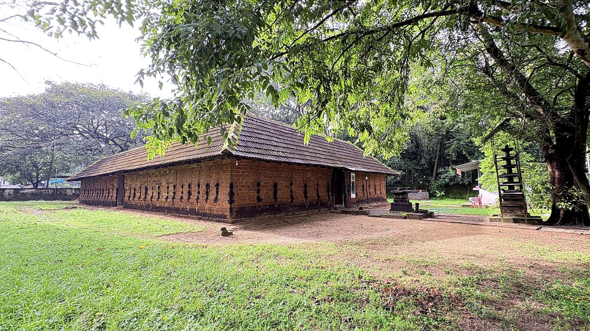
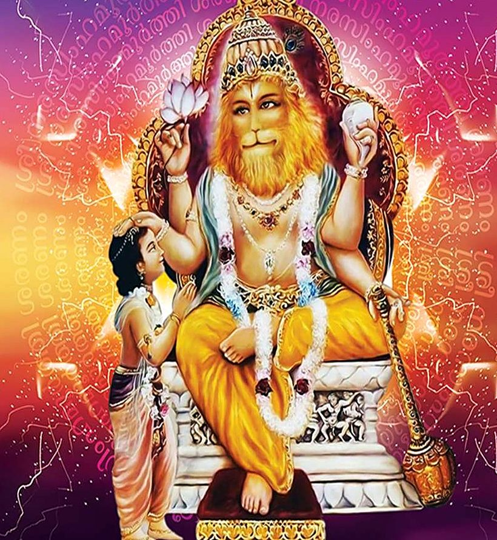
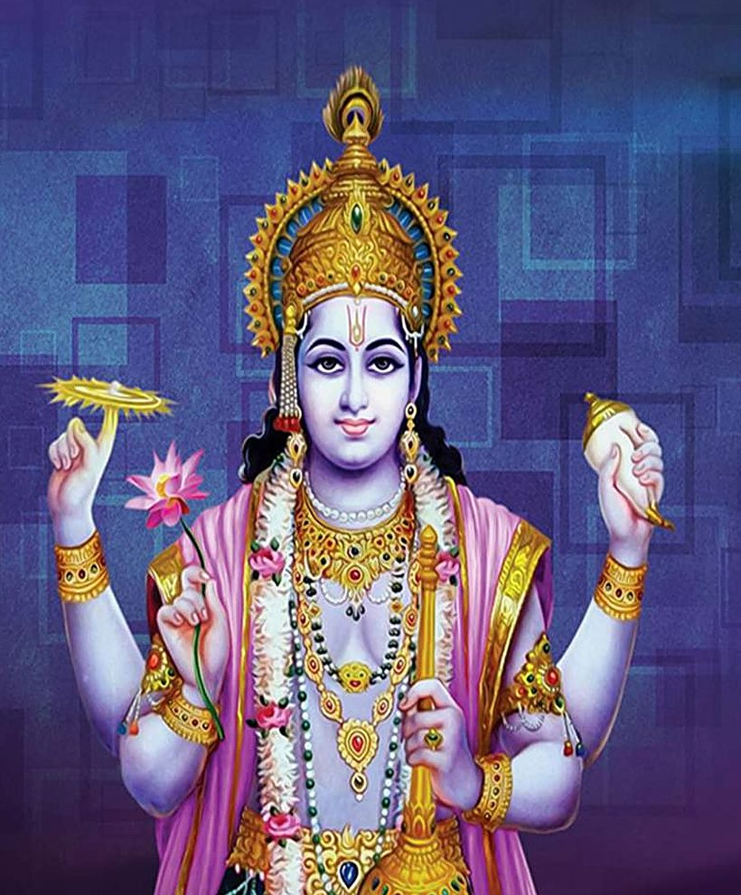

ശ്രീ നരസിംഹമൂർത്തി ശരണം
കോർളി ശ്രീ നരസിംഹമൂർത്തി
ക്ഷേത്രം
വെങ്കിടങ്ങ് · തൃശ്ശൂർ · കേരളം
പുനരുദ്ധാരണവും നവീകരണവും
കോപാദാലോല ജിഹ്വം വിവൃതനിജമുഖം സോമസൂര്യാഗ്നി നേത്രം
പാദാദാനാഭിരക്തപ്രഭമുപരി സിതം ഭിന്നദൈത്യേന്ദ്രഗാത്രം
ചക്രം ശംഖം സപാശാങ്കുശകുലിശഗദാ ദാരുണാന്യുദ്വഹന്തം
ഭീമം തീക്ഷ്ണാഗ്രദംഷ്ട്രം മണിമയ വിവിധാ കൽപ്പമീഡേ നൃസിംഹം
സൂര്യചന്ദ്രന്മാരായി ജ്വലിക്കുന്ന നേത്രങ്ങളോടെ, വായിൽ കോപം കൊണ്ട് ഇളകുന്ന ജിഹ്വയോടെ, ഹിരണ്യകശിപുവിനെ മടിയിൽ കിടത്തി, കൂർത്ത നഖങ്ങൾ കൊണ്ട് മാറ് പിളർന്ന്, പാദം മുതൽ നാഭി വരെ പുതുരക്തം കൊണ്ട് തിളങ്ങുന്ന, ചക്രം, ശംഖം, പാശം, അങ്കുശം, വജ്രം, ഗദ എന്നിവ കൈകളിൽ ധരിച്ചിട്ടുള്ള, മൂർച്ചയുള്ള അഗ്രത്തോട് കൂടിയ ദംഷ്ട്രകളുള്ള, ചുവന്ന മുത്തുകളും വിവിധ അലങ്കാര വസ്തുക്കളും അണിഞ്ഞ് ഇരിക്കുന്ന നരസിംഹമൂർത്തിയെ ഞാൻ ഭജിക്കുന്നു.

൦൧ ക്ഷേത്രത്തെക്കുറിച്ച്
അതിപുരാതനവും
പ്രൗഢഗംഭീരവുമായൊരു ക്ഷേത്രം
വെങ്കിടങ്ങിലെ അതിപുരാതനവും പ്രൗഢഗംഭീരവുമായൊരു ക്ഷേത്രമാണ്, പ്രശസ്തമായ ഉള്ളന്നൂർ മനയുടെ ഊരാണ്മയിലുള്ള കോർളി ശ്രീ നരസിംഹമൂർത്തി ക്ഷേത്രം.
ശത്രുസംഹാരിയും ഭക്തരക്ഷകനുമായ ശ്രീ നരസിംഹമൂർത്തിയുടെ അത്ഭുതചൈതന്യം ഒരു കാലത്ത് ഈ ക്ഷേത്രത്തിൽ നിറഞ്ഞ് നിന്നിരുന്നു. പ്രശസ്ത തന്ത്രി കുടുംബമായ ഇളങ്ങള്ളൂർ മനക്കാർക്കാണ് ക്ഷേത്രത്തിലെ താന്ത്രിക കർമ്മങ്ങളുടെ ചുമതല.
- പ്രതിഷ്ഠ
- ചതുർബാഹുവായ വിഷ്ണു വിഗ്രഹം — കൃഷ്ണശില, ഏകദേശം മൂന്നടി ഉയരം
- ദർശനം
- പടിഞ്ഞാറ് ഭാഗത്തേക്ക്
- ഉപദേവൻ
- കന്നിമൂലയിലെ ഗണപതിഭഗവാൻ മാത്രം
- പ്രധാന വഴിപാട്
- പാനകം
- ഊരാണ്മ
- ഉള്ളന്നൂർ മന
- തന്ത്രി
- ഇളങ്ങള്ളൂർ മന
൦൨ ക്ഷേത്ര വിശേഷങ്ങൾ
വിശേഷ ദിവസങ്ങളും ആചാരങ്ങളും
ക്ഷേത്രവളപ്പിൽ പ്രതിഷ്ഠക്ക് മുന്നിലായിത്തന്നെ ക്ഷേത്രക്കുളവുമുണ്ട്. ഭക്തജനങ്ങളുടെ സഹായസഹകരണങ്ങളോടെ ക്ഷേത്ര ഊരാളകുടുംബവും ക്ഷേത്രകമ്മറ്റിയും ചേർന്നാണ് ക്ഷേത്രഭരണകാര്യങ്ങൾ നടത്തി വരുന്നത്.
-
i
പ്രതിഷ്ഠാദിനം
മകരമാസം — തിരുവോണം നാൾ
വിഗ്രഹപ്രതിഷ്ഠ നടന്ന പുണ്യദിനം ക്ഷേത്രത്തിലെ പ്രധാന ആഘോഷമായി ആചരിച്ച് വരുന്നു.
-
ii
നരസിംഹജയന്തി
വൈശാഖമാസം
ഭഗവാൻ നരസിംഹമൂർത്തിയുടെ അവതാരദിനം ക്ഷേത്രത്തിൽ വിശേഷമായി ആഘോഷിക്കുന്നു.
-
iii
അഷ്ടമിരോഹിണി
ചിങ്ങമാസം
ശ്രീകൃഷ്ണജയന്തി ക്ഷേത്രത്തിലെ വിശേഷദിവസങ്ങളിലൊന്നായി ആചരിക്കുന്നു.
-
iv
അയ്യപ്പൻവിളക്ക്
മണ്ഡലക്കാലം — വൃശ്ചികം മുതൽ 41 ദിവസം
മണ്ഡലക്കാലത്ത് അയ്യപ്പൻവിളക്ക് ക്ഷേത്രത്തിൽ വിപുലമായി ആഘോഷിച്ച് വരുന്നു.
൦൩ ഐതിഹ്യം
നരസിംഹാവതാരം
മഹാവിഷ്ണുവിന്റെ നാലാമത്തെ അവതാരമായാണല്ലോ നരസിംഹാവതാരം കണക്കാക്കിവരുന്നത്. തന്റെ ഉത്തമഭക്തനായ പ്രഹ്ലാദനെ രക്ഷിക്കാനായി ഭഗവാൻ നരസിംഹമായി അവതരിച്ച കഥ സ്മരിക്കാം.

വൈകുണ്ഠത്തിൽ മഹാവിഷ്ണുവിന്റെ ദ്വാരപാലകരായ ജയവിജയന്മാർ, സനകാദി മഹർഷിമാരുടെ ശാപം മൂലം കശ്യപമഹർഷിയുടേയും ദിതിയുടേയും പുത്രന്മാരായി, അസുരന്മാരായി പിറന്നു. ഇവരാണ് ഹിരണ്യാക്ഷനും ഹിരണ്യകശിപുവും. ഇവരിൽ ഹിരണ്യാക്ഷനെ ഭഗവാൻ വരാഹമൂർത്തിയായി നിഗ്രഹിച്ചു.
ഇതിൽ ക്ഷുഭിതനായ ഹിരണ്യകശിപു മഹാവിഷ്ണുവിനെ നശിപ്പിക്കണമെന്ന ഉദ്ദേശ്യത്തോടെ, കഠിനമായ തപസ്സിലൂടെ ബ്രഹ്മാവിനെ പ്രീതിപ്പെടുത്തി വരങ്ങൾ നേടിയെടുത്തു — മനുഷ്യനോ മൃഗത്തിനോ തന്നെ കൊല്ലാൻ കഴിയരുത്, പകലോ രാത്രിയോ തന്റെ മരണം സംഭവിക്കരുത്, ആയുധങ്ങൾ കൊണ്ടും താൻ വധിക്കപ്പെടരുത്. ബ്രഹ്മാവിൽനിന്നും നേടിയെടുത്ത വരങ്ങളാൽ കരുത്തനായ ഹിരണ്യകശിപു ദേവന്മാരേയും മഹർഷിമാരേയും കഠിനമായി ദ്രോഹിക്കാൻ തുടങ്ങി. ഗത്യന്തരമില്ലാതെ ദേവന്മാർ മഹാവിഷ്ണുവിനെ കണ്ട് സങ്കടമുണർത്തിച്ചു. താമസിയാതെ താൻ ഹിരണ്യകശിപുവിനെ നിഗ്രഹിക്കുന്നതാണെന്ന് ഭഗവാൻ അവർക്ക് വാക്ക് കൊടുത്തു.
ഇതിനിടയിൽ ഹിരണ്യകശിപുവിനും കയാദുവിനും ഒരു പുത്രൻ ജനിച്ചു — പ്രഹ്ലാദൻ. ഗർഭസ്ഥശിശുവായിരിക്കെ നാരദ മഹർഷിയിൽ നിന്ന് മഹാവിഷ്ണുവിന്റെ മഹിമകൾ കേൾക്കാനിടയായ പ്രഹ്ലാദൻ ഒരു തികഞ്ഞ വിഷ്ണുഭക്തനായി വളരാൻ തുടങ്ങി. ഇതിൽ അസ്വസ്ഥനായ ഹിരണ്യകശിപു പ്രഹ്ലാദനിൽ ഭഗവാനോടുള്ള വൈരം വളർത്തിയെടുക്കാനായി എല്ലാ ശ്രമങ്ങളും നടത്തിനോക്കിയെങ്കിലും പരാജയപ്പെടുന്നു.
പ്രഹ്ലാദന് ഭഗവാനിലുള്ള ഭക്തി അനുദിനം വർദ്ധിച്ചുവരുന്നത് കണ്ട് പരിഭ്രാന്തനായ അസുരരാജാവ് വാളോങ്ങിക്കൊണ്ട് പ്രഹ്ലാദനോട് ചോദിച്ചു — “നിന്റെ വിഷ്ണു എവിടെയാണ് ഇരിക്കുന്നത്?” ഭഗവാൻ എല്ലായിടത്തും നിറഞ്ഞ് നിൽക്കുന്നു എന്നായിരുന്നു പ്രഹ്ലാദന്റെ മറുപടി. “ഈ തൂണിലുമുണ്ടോ, എങ്കിൽ കാണട്ടെ” എന്ന് പറഞ്ഞ് ഹിരണ്യകശിപു അടുത്തുള്ള തൂണിൽ ആഞ്ഞ് വെട്ടി.
അപ്പോൾ ആ തൂൺ പിളർന്ന് അതിഭയാനകമായ നരസിംഹ രൂപത്തിൽ ഭഗവാൻ അവതരിക്കുകയും ഹിരണ്യകശിപുവിനെ മടിയിൽ കിടത്തി ഉമ്മറപടിയിൽ ഇരുന്ന്, സന്ധ്യാസമയത്ത് തന്റെ കൂർത്ത കൈവിരൽ നഖങ്ങൾ കൊണ്ട് മാറ്പിളർന്ന്, ബ്രഹ്മാവ് നൽകിയ വരങ്ങൾക്ക് ഭംഗമൊന്നും വരുത്താതെ നിഗ്രഹിക്കുന്നു.
ഹിരണ്യകശിപുവിനെ നിഗ്രഹിച്ച്, അസുരന്റെ കുടൽമാല വലിച്ചെടുത്ത് മാറിലണിഞ്ഞ് രക്തത്തിൽ കുളിച്ച് ഭയാനകമായി അട്ടഹസിച്ച് നിൽക്കുന്ന ഭഗവാന്റെ രൂപം കണ്ട് ദേവന്മാർ പോലും ഭയപ്പെട്ടുപോയി. ഭഗവാന്റെ ഈ അതിഭീകരരൗദ്രഭാവത്തെ എങ്ങനെ ശമിപ്പിക്കും എന്ന് അറിയാതെ എല്ലാവരും വ്യാകുലപ്പെട്ടിരിക്കുമ്പോൾ ബാലനായ പ്രഹ്ലാദൻ തികച്ചും നിർഭയനായി, തൊഴുകൈകളുമായി ഭഗവാന്റെ മുന്നിലെത്തുകയും വശ്യമനോഹരമായ ഭഗവൽസ്തുതികൾ ചൊല്ലി ഭഗവാനെ നമസ്കരിക്കുകയും ചെയ്തു. ഇതാണ് ഭാഗവതത്തിലെ പ്രശസ്തമായ പ്രഹ്ലാദസ്തുതി.
പ്രഹ്ലാദന്റെ സ്തുതികേട്ട് ഭഗവാൻ ശാന്തനാവുകയും പ്രസന്നഭാവത്തിൽ പ്രഹ്ലാദനെ അനുഗ്രഹിച്ച് അന്തർധാനവും ചെയ്തു. ഹിരണ്യകശിപുവിന്റെ വധത്തിന് ശേഷം, പ്രഹ്ലാദ സ്തുതികേട്ട് രൗദ്രതക്ക് അല്പം ശമനം വന്നിട്ടുള്ള ഭാവത്തിലാണ് ഈ ക്ഷേത്രത്തിലെ നരസിംഹമൂർത്തിയെ സങ്കൽപ്പിച്ച് വരുന്നത്.
൦൪ അഷ്ടമംഗലപ്രശ്നം
ദേവചൈതന്യം ക്ഷയോന്മുഖം —
പ്രശ്നവിധി പറയുന്നത്
ഒരു കാലത്ത് പ്രൗഢിയും ദേവചൈതന്യവും ഈ ക്ഷേത്രത്തിൽ നിറഞ്ഞ് നിന്നിരുന്നുവെങ്കിലും കാലാന്തരത്തിൽ അതിന് ക്ഷയം സംഭവിച്ചു. ഇന്ന് ക്ഷേത്രത്തിൽ ദേവചൈതന്യം വളരെ കുറഞ്ഞ അവസ്ഥയിലായിട്ടുണ്ട് എന്നതാണ് ഭക്തജനങ്ങളുടെ അനുഭവം.
ക്ഷയിച്ചുകൊണ്ടിരിക്കുന്ന ദേവചൈതന്യത്തെ വർദ്ധിപ്പിച്ച് എങ്ങിനെ അനുഗ്രഹകലയാക്കി മാറ്റാം എന്ന ചിന്ത ഭക്തജനങ്ങളെ കാര്യമായി അലട്ടാൻ തുടങ്ങിയതിന്റെ ഫലമായി അഞ്ഞൂർ ശ്രീ രമേഷ് പണിക്കരുടെ നേതൃത്വത്തിൽ ഒരു അഷ്ടമംഗലപ്രശ്നം ക്ഷേത്രത്തിൽ നടത്തുകയുണ്ടായി.
പ്രശ്നപ്രകാരം ദേവചൈതന്യം വളരെ ക്ഷീണാവസ്ഥയിലാണെന്ന് തെളിഞ്ഞ് കാണുകയുണ്ടായി. ദേവകോപലക്ഷണങ്ങൾ തന്നെ പ്രശ്നത്തിൽ പ്രകടമായി കണ്ടു. ക്ഷേത്രത്തിലെ നരസിംഹചൈതന്യം മഹത്ത്വപൂർണ്ണമാണെന്നും ഒരു മഹാക്ഷേത്രത്തിന്റെ എല്ലാ അംഗങ്ങളും ചടങ്ങുകളും ഈ ക്ഷേത്രത്തിൽ ഉണ്ടായിരുന്നതായും പ്രശ്നത്തിൽ തെളിയുകയുണ്ടായി.
ക്ഷേത്രത്തിന്റെ അപചയം നാട്ടുകാർക്കും ദോഷമായി തീർന്നിട്ടുണ്ട്
- സന്താനദുരിതം
- വിവാഹപ്രയാസങ്ങൾ
- വിദ്യാതടസ്സം
- അകാലമൃത്യു
- വിഷാദരോഗം
- അഗ്നിഭയം
- സ്ഥാനഭ്രംശം
- മാനഹാനി
- ദുഷ്കീർത്തി
- കർമ്മതടസ്സങ്ങൾ
- ദാമ്പത്യസുഖഹാനി
എന്നിങ്ങനെ പലവിധ ദുരിതങ്ങളും ഈ നാട്ടുകാർക്ക് അനുഭവിക്കേണ്ടി വരുന്നതായും പ്രശ്നത്തിൽ തെളിഞ്ഞിട്ടുണ്ട്.
പ്രശ്ന വിധി
ക്ഷയോന്മുഖമായിക്കൊണ്ടിരിക്കുന്ന ദേവചൈതന്യം വർദ്ധിപ്പിക്കുന്നതിനും അതുവഴി നാടിന്റെ സർവ്വതോന്മുഖമായ അഭിവൃദ്ധിക്കും വേണ്ടി, തന്ത്രിയുടെ നിർദ്ദേശപ്രകാരം ക്ഷേത്രത്തിന്റെ ജീർണ്ണോദ്ധാരണവും, സർപ്പബലി, പായസഹോമം തുടങ്ങിയ പരിഹാര കർമ്മങ്ങൾക്ക് ശേഷം ക്ഷേത്രത്തിൽ നവീകരണകലശവും നടത്തേണ്ടതാണെന്ന് പ്രശ്നവിധിയായി ദൈവജ്ഞർ മുന്നോട്ട് വെച്ചിട്ടുണ്ട്.
-
1
പരിഹാര കർമ്മങ്ങൾ
സർപ്പബലി, പായസഹോമം, പുണ്യാഹം തുടങ്ങിയ കർമ്മങ്ങൾ ജീർണ്ണോദ്ധാരണത്തിന് മുൻപായി നടത്തുന്നു.
-
2
ജീർണ്ണോദ്ധാരണം
ചുറ്റുമതിൽ, മണ്ഡപം, കുളസംരക്ഷണം തുടങ്ങിയ നിർമ്മാണങ്ങൾ വാസ്തുവിധിപ്രകാരം പൂർത്തിയാക്കുന്നു.
-
3
നവീകരണകലശം
നിർമ്മാണങ്ങൾ പൂർത്തിയായ ശേഷം തന്ത്രിയുടെ നേതൃത്വത്തിൽ നവീകരണകലശം ചടങ്ങോടെ നടത്തുന്നു.
൦൬ പുനരുദ്ധാരണ പദ്ധതികൾ
നവീകരണകലശത്തിന് മുൻപ്
പൂർത്തിയാക്കേണ്ട പ്രവൃത്തികൾ
നവീകരണകലശത്തിന് മുൻപ് പൂർത്തിയാക്കേണ്ട അവശ്യ പ്രവൃത്തികളുടെ വിവരങ്ങളും ഏകദേശ ചെലവും താഴെ ചേർക്കുന്നു.
-
01
ചുറ്റുമതിൽ നിർമ്മാണം
മുൻവശത്തെ മതിലിന്റെ നിർമ്മാണം ബാക്കിയാണ്. ഈ ഭാഗത്ത് കുളം ക്ഷേത്രാതിർത്തിയുമായി ചേരുന്നതിനാൽ, കുളത്തിന്റെ അടിനിരപ്പിൽ നിന്ന് ആരംഭിക്കുന്ന റിറ്റെയ്നിംഗ് വാളായി ഇത് നിർമ്മിക്കണം. ബാക്കി മൂന്ന് വശങ്ങളിലും ബ്ലോക്ക് വർക്ക് പൂർത്തിയായി; പ്ലാസ്റ്ററിംഗും പെയിന്റിംഗും ബാക്കിയുണ്ട്.
- മുൻവശത്തെ റിറ്റെയ്നിംഗ് വാൾ ₹ 15,00,000
- മൂന്ന് വശങ്ങളിലെ പ്ലാസ്റ്ററിംഗ് & പെയിന്റിംഗ് ₹ 2,00,000
₹17,00,000 -
02
നമസ്കാര മണ്ഡപം
വാസ്തുപ്ലാനിൽ വിശദമാക്കിയിരിക്കുന്ന പ്രകാരം നമസ്കാര മണ്ഡപം നിർമ്മിക്കണം. കോൺക്രീറ്റ് അംഗങ്ങൾ ഉപയോഗിച്ചുള്ള നിർമ്മാണമാണ് വിഭാവനം ചെയ്തിരിക്കുന്നത്.
₹7,50,000 -
03
പ്രദക്ഷിണവഴി, തിരുമുറ്റം, ബലിക്കല്ല്
ചുറ്റമ്പലത്തിന് പുറത്തുള്ള പ്രദക്ഷിണവഴി കരിങ്കൽ സ്ലാബുകൾ കൊണ്ട് പാകണം. ശ്രീകോവിലിന് ചുറ്റുമുള്ള തിരുമുറ്റത്തും ശരിയായ പാകൽ നടത്തണം. ബലിക്കല്ലുകൾക്ക് ആവശ്യമായ മാറ്റങ്ങളും ക്രമീകരണങ്ങളും വരുത്തണം.
₹8,50,000 -
04
മേൽക്കൂര പുനർനിർമ്മാണവും ചെറിയ നിർമ്മാണങ്ങളും
നിലവിലുള്ള ഓട് മേഞ്ഞ മേൽക്കൂര, കഴുക്കോൽ, പലക എന്നിവ സഹിതം അഴിച്ചുമാറ്റി, ഉപയോഗയോഗ്യമായ സാമഗ്രികൾ അടുക്കിവെച്ച്, എം.പി. ഓട് ഉപയോഗിച്ച് പുതിയ മേൽക്കൂര നിർമ്മിക്കണം. മുളയറ നിർമ്മാണം, ശ്രീകോവിലിന്റെ പ്ലാസ്റ്റർ അറ്റകുറ്റപ്പണി തുടങ്ങിയ ചെറിയ നിർമ്മാണങ്ങളും ഇതിൽ ഉൾപ്പെടുന്നു.
₹2,00,000 -
05
കുളസംരക്ഷണം, പടവുകൾ, നടപ്പാത
ബാക്കിയുള്ള വശങ്ങളിൽ പരമ്പരാഗത രീതികൾ ഉപയോഗിച്ച് കുളം സംരക്ഷിക്കണം. പൂജാരികൾക്കും ഭക്തജനങ്ങൾക്കും വേണ്ടി ശരിയായ പടവുകളും സ്ഥലവും ഒരുക്കണം. പാകൽ ജോലികളോടു കൂടിയ നടപ്പാതകളും പദ്ധതിയിലുണ്ട്.
₹15,00,000
നിർമ്മാണ പ്രവൃത്തികൾക്ക്
₹50,00,000
അമ്പത് ലക്ഷം രൂപ മാത്രം
നവീകരണകലശത്തിന്
₹15,00,000
പതിനഞ്ച് ലക്ഷം രൂപ മാത്രം
ആകെ ഏകദേശ ചെലവ്
₹65,00,000
അറുപത്തിയഞ്ച് ലക്ഷം രൂപ മാത്രം
൦൭ ചിത്രശാല
ഇന്നത്തെ ക്ഷേത്രം
ക്ഷേത്രത്തിന്റെയും പരിസരത്തിന്റെയും നിലവിലുള്ള ദൃശ്യങ്ങൾ.
൦൮ സഹായിക്കാം
ഭക്തജനങ്ങളുടെ സഹകരണം
കോർളി ശ്രീനരസിംഹമൂർത്തി ക്ഷേത്രത്തിൽ നടത്തുന്ന ജീർണ്ണോദ്ധാരണ കർമ്മങ്ങളിലും നവീകരണകലശത്തിലും നല്ലവരായ എല്ലാ ഭക്തജനങ്ങളുടേയും അകമഴിഞ്ഞ സഹായസഹകരണങ്ങൾ ഉണ്ടാകണമെന്ന് വിനീതമായി അഭ്യർത്ഥിക്കുന്നു.
ബാങ്ക് വിവരങ്ങൾ
KORLI KSHETHRA COMMITTEE
- A/c No
- 1562101018413
- IFSC
- CNRB0001562
- MICR
- 680015103
- ബാങ്ക്
- Canara Bank, Padoor Branch
ബന്ധപ്പെടാൻ
- ബിജു ഉള്ളന്നൂർ ട്രസ്റ്റി & അഡ്മിനിസ്ട്രേറ്റർ 9946150175
- ഷാജു പത്യാല പ്രസിഡന്റ് 9656491920
- സുബ്രഹ്മണ്യൻ നടുവിൽപുരയ്ക്കൽ സെക്രട്ടറി 9946248952
ക്ഷേത്രകമ്മറ്റി
- ബിജു ഉള്ളന്നൂർട്രസ്റ്റി & അഡ്മിനിസ്ട്രേറ്റർ
- ഷാജു പത്യാലപ്രസിഡന്റ്
- നവീൻ പണിക്കർഅഡ്മിനിസ്ട്രേറ്റർ
- സുബ്രഹ്മണ്യൻ എൻ.വി.സെക്രട്ടറി
- ഡോ. ഹരിദാസ്അഡ്മിനിസ്ട്രേറ്റർ
- ശിവരാമൻ ടി.കെ.ട്രഷറർ
- കേണൽ തിലകരാജ്കോർഡിനേറ്റർ
അർത്ഥാ ഗൃഹേ നിവർത്തന്തേ ശ്മശാനേ പുത്രബാന്ധവാഃ
സുകൃതം ദുഷ്കൃതം ചൈവ ഗച്ഛന്തമനുഗച്ഛതി
ആരാണ് നമ്മുടെ സന്തതസഹചാരികൾ? ജീവിതപങ്കാളിയാണോ? സന്താനങ്ങളാണോ? ബന്ധുമിത്രങ്ങളാണോ? ഒരിക്കലുമല്ല. എല്ലാ ബന്ധങ്ങളും പട്ട വരെ മാത്രം. എന്നാൽ നമ്മൾ ചെയ്യുന്ന സൽക്കർമ്മങ്ങളുടേയും ദുഷ്ക്കർമ്മങ്ങളുടേയും ഫലങ്ങൾ തന്നെയാണ് സദാസമയവും നമ്മളുടെ കൂടെയുള്ളത്. അതിനാൽ വിവേകശാലികൾ ഈശ്വരോന്മുഖമായ കർമ്മങ്ങളിലേർപ്പെട്ട് ശ്രേയസ്സിന്റെ പാത സ്വീകരിക്കുന്നു.
കോർളി ശ്രീ നരസിംഹമൂർത്തി ക്ഷേത്രത്തിൽ നടത്തുന്ന ജീർണ്ണോദ്ധാരണ കർമ്മങ്ങളിലും നവീകരണകലശത്തിലും സഹകരിച്ച് നരസിംഹമൂർത്തിയുടെ അനുഗ്രഹത്തിന് പാത്രീഭൂതരാവാൻ എല്ലാ ഭക്തജനങ്ങൾക്കും സൗഭാഗ്യമുണ്ടാകട്ടെ എന്ന് പ്രാർത്ഥിക്കുന്നു.
എന്ന്, ക്ഷേത്രകമ്മറ്റി